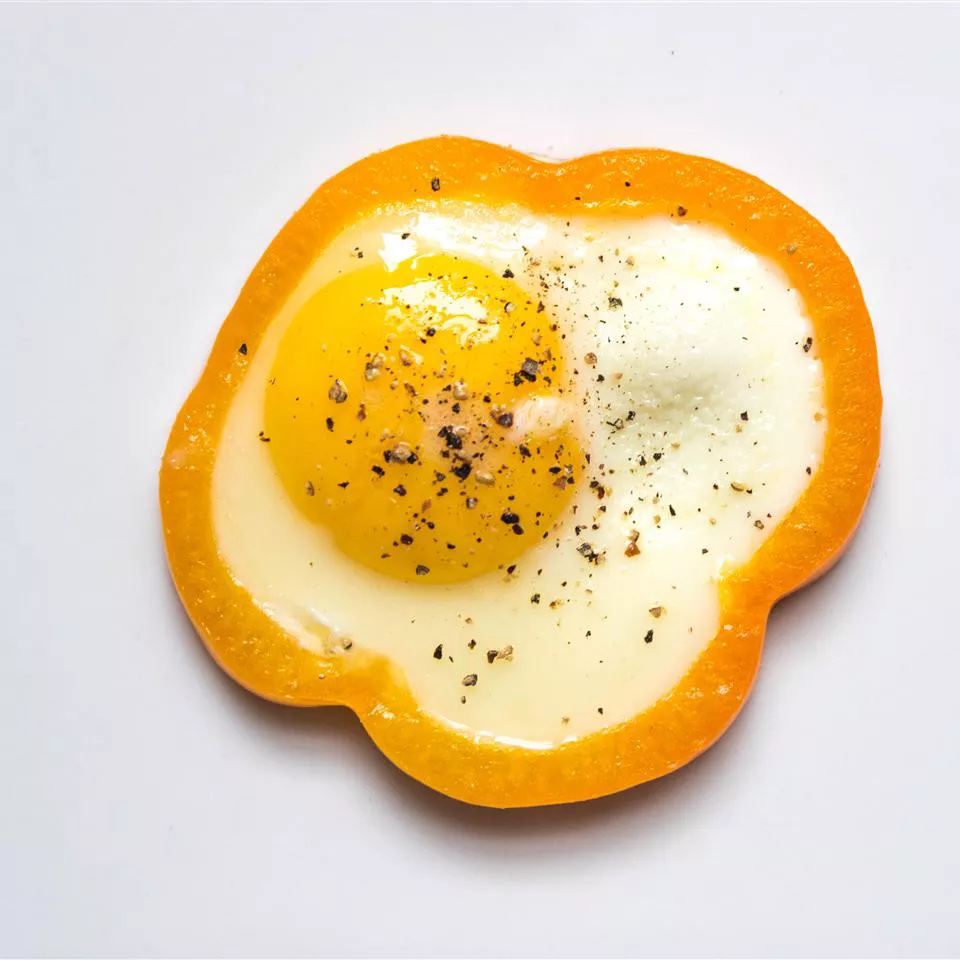

Egg in a Pepper

Description
This recipe is paleo and a super easy way to eat your eggs! Can also top with cheese or even a slice of bread.
Ingredients
- 1 large egg
- 1 (1/4 inch thick) ring bell pepper
- Salt and ground black pepper to taste
Steps
- Heat a non-stick skillet over medium heat.
- Place bell pepper ring in the hot skillet.
- Crack egg into bell pepper ring; cook until bottom holds together and corners are browned, 2 to 3 minutes.
- Flip and cook until desired doneness is reached, 2 to 3 minutes more; season with salt and ground black pepper.